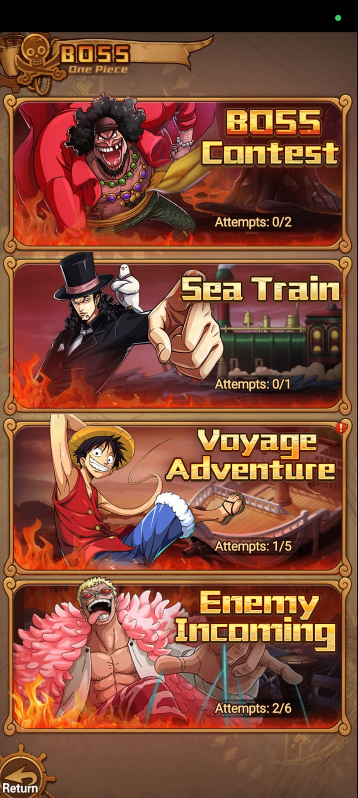
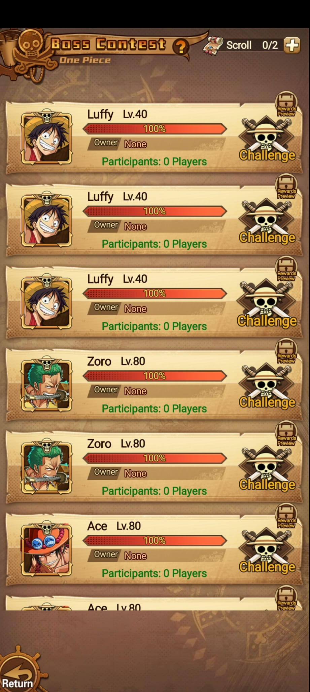
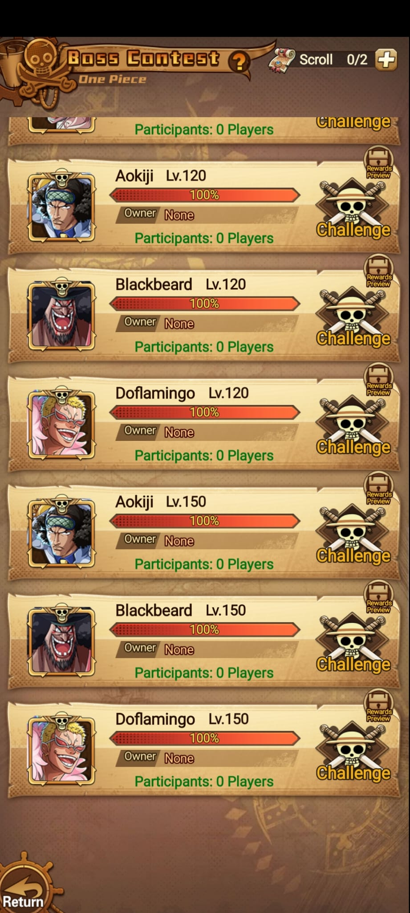
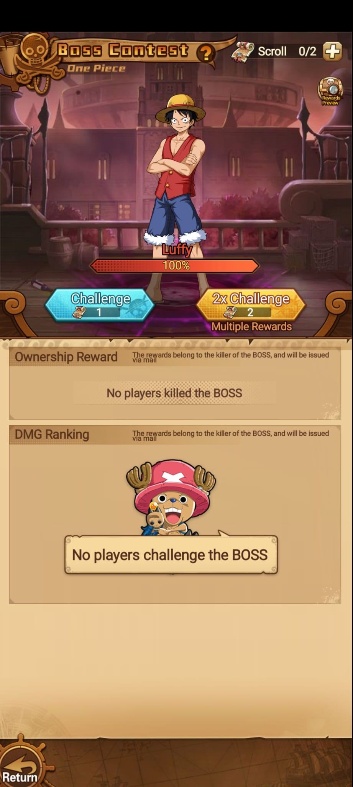

Menú
Modos de Boss

Jefes
Boss agrupa modos de combate contra jefes y eventos de daño. En el menú se ven Boss Contest, Sea Train, Voyage Adventure y Enemy Incoming, cada uno con su propio contador de intentos.
Menú

Resumen
| Modo | Intentos | Lectura | Recompensas / progreso |
|---|---|---|---|
| Boss Contest | 0/2 | Lista de jefes por nivel con vida, owner, participantes y Challenge. | Ownership Reward, DMG Ranking y Rewards Preview. |
| Sea Train | 0/1 | Desafío por vagones/tren, con boss del vagón y reglas especiales. | Daily Rewards y progreso por carriage. |
| Voyage Adventure | 1/5 | Exploración de viaje con eventos y asistencia de amigos. | Recompensas de exploración y encuentros. |
| Enemy Incoming | 2/6 | Oleada/enemigo entrante con ranking de daño. | Reward, Leaderboard y DMG Top 5. |
Boss Contest



Boss Contest
El recurso visible es Scroll y aparece en 0/2. Challenge consume 1 Scroll y 2x Challenge consume 2 Scroll.
Cada jefe muestra Owner. En las capturas todos están en None, lo que sugiere que el killer o creador del boss puede quedar marcado.
La lista muestra Participants: 0 Players. Es un modo compartido o competitivo donde varios jugadores pueden pegar al mismo boss.
Cada fila tiene acceso a vista previa de recompensas. En el detalle se separan Ownership Reward y DMG Ranking.
El texto indica que la recompensa pertenece al killer del boss y se envía por mail.
El ranking de daño también entrega premios por mail. Si nadie pegó, la pantalla muestra No players challenge the BOSS.